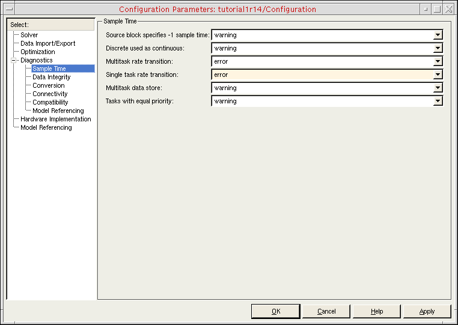

B
Troubleshooting
The coupler module prints messages to the MATLAB main window and to the AMS Designer/xmsim console. The UNIX version of the Simulink coupler block also writes messages to the SimCoupler.log file in the MATLAB run directory. These messages can help you troubleshoot problems.
Possible Problems
Here are some possible problems you might encounter and what you can do.
SimVision does not come up, NC elaboration failed
Netlist the design again and restart elaboration/simulation. Check for error messages in the output window or in the log files.
The cosimulation cannot be established
If AMS Designer/xcelium terminates immediately after starting the simulation run and the AMS Designer/xcelium console closes, go to the dedicated AMS run directory and review the xmsim.log file. Coupler module messages appear at the end of this file.
ncsim> run
initializing couple module 'tb_sine.I6'
ERROR: connecting to socket failed, sockfd=16, host=localhost, port=5023
errno=111: Connection refused
ERROR: can't create new connection to 'localhost' at port 5023 (Master simulator not running?)
The coupler module cannot connect to MATLAB. Here are some possible reasons and work-arounds:
-
The Simulink simulation did not start or has stopped as a result of the time-out settings.
Try again. Start the Simulink simulation before the AMS Designer/xmsimsimulation. Wait for the MATLAB initialization phase to finish before starting AMS Designer. Do not wait longer than the time-out before starting AMS Designer. -
The simulators are using different socket ports.
Check the settings in MATLAB and in the Virtuoso schematic editor. If there are differences, change the port numbers so that they match. -
MATLAB does not run on the specified host.
Check theHostnameparameter of the coupler module on the Virtuoso schematic. The default value islocalhost. -
Another service is using the socket port.
Change to another port on both sides.
The simulation ends before the desired time
The cosimulation terminates when one of the simulators reaches its stop time. On the AMS Designer side, you configure this setting on the ADE Choosing Analyses form or in the Virtuoso® Hierarchy Editor on the Netlist and Run form (or by choosing AMS – Detailed Setup – Analyses). In Simulink, choose Simulation – Configuration Parameters and type a simulation stop time in the Stop time field on the Configuration Parameters form.
When using framed signals the Simulink coupler module reports the error "lookup ports failed"
The software limits the maximum frame size to 10,000 for each input signal. If your application requires a larger frame size, contact Cadence for support.
Possible Simulink Errors
Here are some possible Simulink error messages and how you might handle them.
"Illegal rate transition found involving block 'sine_tb_frame/SimCoupler' at input port 2. A rate transition block must be inserted between the two blocks."
Simulink generates this error by default only for the multitasking solver mode of its fixed-step solver when signals with different sample rates connect to the same block. In framed mode, the cosimulation produces wrong results when signals with different sample rates connect to the Simulink coupler module.
We recommend that you turn on this error message for single-task mode. All models in the AMS Designer/Simulink Cosimulation Library that use framed signals have this option turned on. To turn on this error message for single-task mode, do the following:
-
In the testbench schematic window, choose Simulation – Configuration Parameters.
The Configuration Parameters form appears. - Select Diagnostics, Sample Time.
-
In the Single task rate transition field, select error.
 - Click OK.
"Error reported by S-function 'SimCoupler' in block 'sine_tb_frame/SimCoupler': could not determine block sample rate, try using the fixed step solver"
You can only use the Simulink coupler module whose Frame mode is set to framed in models that have fixed sample rates. (You specify the Frame mode on the Function Block Parameters form.)
You can use the variable step solver as long as the coupler module has a fixed sample rate. To turn on sample time coloring so that you can inspect the sample rates in your model, do the following:
-
In the testbench schematic window, choose Format – Port/Signal Displays – Sample Time Colors.
Black and gray indicate a variable sample time, which you cannot have in framed mode. Also, you cannot have different sample times at the coupler module (see the previous Simulink error message).
Return to top